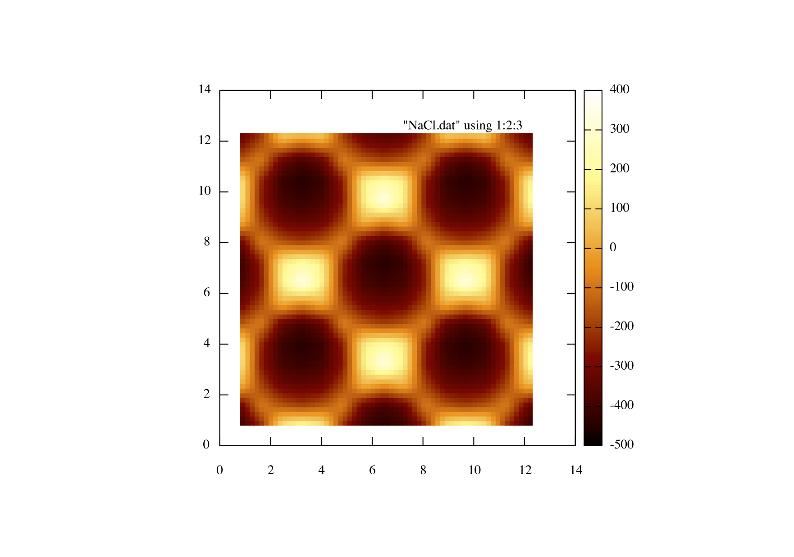

Running a full FM-AFM simulation of NaCl
Now for a full simulation using most of the things you have learned in the past few tutorials so the explanation will be more brief. Definitely do not use this tutorial as a starting point, it is recommended that you have went through the previous tutorials first.
As always lets add our mandatory modules, including the phase lock loop (PLL) composite circuit that is required in AFM setups;
Lets initialise our machine;
Lets add our Cantilever circuit, the parameters are described in the documentation but for now lets use these values;
Since we need to be able to measure amplitude we should include the amplitude detector composite circuit;
We need to know just how much we must excite the cantilever so we can do this using a PI circuit;
It often safe practice to limit the agc signal so it doesn't get to high or negative so to do this we will implement a limiter circuit.
The most important part of an AFM set up is the PLL (Phase lock loop) as this is the device that actually gives us the change in frequency. Again we have a PLL composite circuit all set up already so simply follow the parameters given below;
We need the excitation signal to be off phase by pi /2. Since the output of the pll will be out of phase by -pi /2 (a cosine output wave compared to a sine input wave), so we will invert the cos wave in order to give us a phase shift of pi /2).
in order for us to excite the cantilever we must multiply the output of the PLL with the output of the PI circuit to ensure we get an appropriate excitation circuit, hence we must add a multiplication circuit;
We need to be able to move our cantilever so lets add the scanner circuit;
We have a 3d force field for the NaCl included in the tutorial, the details of how to add an interpolation circuit was covered in this tutorial so I will simply state what is required here. One thing to note is the ForceMultiplier parameter this allows you to change the units of your force field to what ever it is you require;
We require an output circuit this is set up in the same way as as before, this time the channels we will register are "x" , "y" and the change in frequency "df".
So we have added all the circuits we need for this FM-AFM setup so lets connect our circuits now. so lets hook up or x and y channel of the scanner to the x and y channel of the interpolation circuit;
The z channel is a little more involved since the cantilever oscillates in that dimension we must connect the absolute position (position of the holder + oscillation of the cantilever) of the cantilever, so firstly lets connect the scanners z channel to the holder position of the cantilever;
Next lets connect the absolute position of the cantilever (zabs) to the interpolation circuit, hence giving us the force where the tip is;
now lets connect the third force component of the force field (the z component) to the force channel of the cantilever;
So we need to measure the amplitude of the tip so lets connect the tip position to our amplitude detector;
So the amplitude detector is capable of outputting the amplitude of the wave or a normalised version of that wave. Since we need to know but how much to excite the wave by lets connect the amplitude to the PI circuit so we can measure that;
So now we have to hook up our pll circuit, the pll must have a feedback by using the cos output of the pll and have the normalised cantilever as an input
So now we can multiply the output from the PI circuit and the cos output of the pll circuit in order to create an excitation circuit and then connect this signal to the cantilever excitation channel;
Lets also connect the scanner record channel to the output recording channel;
Now we have connected all our circuits and all that is left is to issue commands to the scanner in order to move the cantilever; Lets start by placing our cantilever at position 0,0,15 , please note that the distances are in angstroms since the force field is given in angstroms, also lets wait for 0.5 seconds;
Next lets move scanner down by 11 angstroms and have it wait for 1 seconds this will allow the pll to settle down before we start scanning;
Lets now set up our ScanArea function like we did in this tutorial, except this time we want 64 points per line and 64 lines over an image area of 11.68 by 11.68 angstroms. If you are using gnuplot leave the blanklines as True but if you choose to use another plotting program that doesn't use the blank lines feel free to set it to False, finally use the ScanArea() function to begin your scan.
So the final input file should look like this;
This scan will most likely take a long time you can reduce the time it will take by altering the resolution parameter. After it has finished running plot an intensity plot, if you are using gnuplot you can use the following commands;
Your results should look similar to the image below;

 1.8.9.1
1.8.9.1